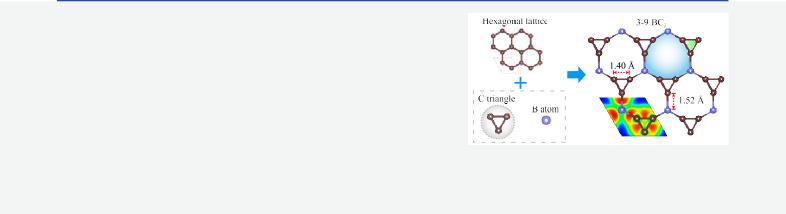

Letter
3‑X Structural Model and Common Characteristics of Anomalous Thermal Transport: The Case of Two-Dimensional Boron Carbides
Cite This: J. Phys. Chem. Lett. 2021, 12, 10975−10980
Hanpu Liang, Hongzhen Zhong, Sheng Huang, and Yifeng Duan*


ABSTRACT: Improving the reliability of electronic devices requires effective heat management, and the key is the relationship between the thermal transport and temperature. Inspired by synthesized T-carbon and H-boron, the 3-X structural models are proposed to unify the two-dimensional (2D) multitriangle materials. Employing structural searches, we identify the stability of the 3-X configuration in 2D boron carbides as 3-9 BC3 monolayer, which, unexpectedly, exhibits a linear thermal conductivity versus temperature, not the traditional ∼1/T trend. We summarize the common characteristics and explore why this behavior is absent in 3-9 AlC3 and graphene via investigating the optical modes. We show that the linear behavior is a direct consequence of
the special oscillation modes by the 3-X model associated with the largest group velocity. We find that 2D materials with such behavior usually share a relatively low thermal conductivity. Our work paves the way to deeply understand the lattice thermal transport and to widen nanoelectronic applications.
Downloaded via CHINA UNIV OF MINING AND TECHNOLOGY on November 10, 2021 at 02:20:06 (UTC).
See https://pubs.acs.org/sharingguidelines for options on how to legitimately share published articles.
ACCESS
B
oron and carbon are adjoining neighbors in the periodic table and can form a diversity of allotropic structures by
the sp-, sp2- and sp3-hybridized bonds. With rapid progress in 2D materials, various allotropes are currently available, for example, carbon nanotubes,1 fullerenes,2 graphene,3 honey- comb borophene,4 triangular borophene,5 and other 2D sheets.6−8 Recently, T-carbon was proposed by substituting each atom in cubic diamond with a carbon tetrahedron9 and was verified by the synthesis of T-carbon nanowires via the laser irradiation method.10 A boron allotrope of cF-B8 shares
Scheme 1. Structural Sketches of 3-7, 3-9, and 3-12 Structural Models
with T-carbon a similar structure composed of boron
tetrahedrons.11 In T-carbon-like structures, the triangle-
dodecagon (3-12) configuration exists along the [110] direction. H-boron was further proposed by arranging the boron tetrahedron at each site of hexagonal diamond,12,13 where the 3-12 sketch appears along the [001] direction. However, the 3-12 monolayers remain unclear in 2D materials because of the too strong covalent bonds. Herein, inspired by T-carbon and H-boron, we first propose the 3-X (X = 7, 8, 9, 10, 11, or 12) structural models to unify the multitriangle configurations in 2D materials by putting the atomic triangles on sites of a hexagonal lattice. For example, the 3-9 configuration is available once three triangles are alternately arranged in a hexagonal ring. The sketches of 3-X (X = 7, 9, and 12) models are illustrated in Scheme 1.
Boron is short one electron, compared to carbon; thereby, a
large difference exists in the bonding and structural proper- ties.14−16 For example, cubic and hexagonal diamonds remain unstable when carbon atoms are substituted by boron.12 The emphasis in this work is the 3-X configurations of 2D boron carbides by identifying the chemical stoichiometry, i.e., the “X”,
to stabilize the 2D configurations, together with physical properties for further applications. Because the graphene and borophene are experimentally available, 2D 3-X boron carbides are promising to remain stable and thus to reflect the simplicity of planar clusters.
Received: October 4, 2021
Accepted: November 2, 2021
Structural properties are critical to the thermal conductivity κ.17−23 Most materials in either bulk or low-dimensional configuration display a temperature dependence of thermal conductivity as κ ∼ 1/Tα, where the α varies from 0.85 to 1.05,24−27 because the accumulated population of phonons by increasing temperature reduces the mean free paths; hence, the scattering processes are greatly activated. However, a linear
© XXXX American Chemical Society
https://doi.org/10.1021/acs.jpclett.1c03248
Figure 1. (a) 3-9 BC3 configuration, where carbon triangles are alternately arranged in hexagonal lattice, together with the electron localization functions. (b) Temperature-dependent thermal conductivity in 3-9 BC3 and AlC3 monolayers. The absolute and percentage (inset panels) contributions from the phonon branches in (c) 3-9 BC3 and (d) AlC3 monolayers.
Figure 2. (a−d) Phonon spectra as well as density of states (DOS) and the scattering-rate distributions of the FO branch with the Born effective charges and the dielectric constants in the first Brillouin zone in 3-9 BC3 and AlC3. (e−g) The scattering rates and the heat capacity versus frequency at representative temperatures, and the maximum group velocity of each phonon branch in 3-9 BC3.

thermal conductivity versus temperature relationship appears in hexagonal GaN monolayer by the large difference in atom mass and electronegativity.28,29
In this Letter, we propose the 3-X structural models to unify the 2D multitriangle materials and identify the stability as 3-9 BC3 monolayer in 2D boron carbides using the first-principles structural searches; the structural details are illustrated in Figure 1a. Unexpectedly, 3-9 BC3 displays a linear thermal conductivity versus temperature, but the very close atom mass and electronegativity of B and C atoms contradict the mechanism of GaN monolayer.28 Furthermore, large differ- ences in atom mass and electronegativity clearly exist in the 3-9 AlC3 monolayer, but this anomalous behavior is absent. We
summarize the common characteristics of the linear behavior and point out that 2D materials with this behavior usually share a relatively low thermal conductivity.
Structural searches are performed by the USPEX code,30,31 in combination with structural relaxations and total energy calculations within the generalized gradient approxima- tion32−34 and G0W0-BSE optical absorption35 as implemented in the VASP code.36−38 Thermal conductivity is predicted by the ShengBTE code,39,40 where the fully iterative solution of the Boltzmann transport equation is adopted. Phonon dispersions are calculated by the PHONONPY code.41−43 The computational details and calculated data are provided in
Figure 3. Phonon vibrational modes at the Γ, M, and K points and scattering-rate (SR) distributions in the first Brillouin zone for each phonon branch in 3-9 BC3 monolayer.
section I in the Supporting Information. The lattice thermal conductivity is defined as40
eigenvectors of phonon modes under a horizontal reflection operation σh satisfy
κ = ∑ C v2τ
ex →σh ex, e y →σh e y, ez →σh − ez
λ λ λ
λ
(1)
λ λ λ λ λ λ
(3)
where Cλ = n0(n0 + 1)ℏ2ω2/Vk T2 is the heat capacity per
Three-phonon scatterings with an odd number (one or three)
λ λ λ B
λλ′λ″
mode; vλ = ∂ω/∂q is the group velocity; and the phonon relaxation time τλ is inverse to the scattering rates, which are associated with the anharmonic IFCs Φ± as follows
ol n0 − n0 |o
of out-of-plane modes are prohibited, such as FA + FA → FA, FA + TA → TA, and FO → FA + FA. Thereby the FA and FO modes determine the thermal conductivity. The FA branch routinely obeys the κ ∼ 1/T trend. The FO contribution first
rises and then drops slightly with temperature, and it
m
W ± = ℏπ o λ′
λ″ o × |Φ± |2
4Nω ω ω o 0 0 o
λλ′λ″
}
λ λ′ λ″ onλ′ + nλ″ + 1o
λλ′λ″
overwhelms the FA branch after the crossovers. At relatively
high temperature, the FO mode contributes above 40% in BC
n ~
δ(ωλ ± ωλ′ − ωλ″)
where ωλ is the phonon frequency.
(2)
3
but ∼26% in AlC3. Therefore, it is feasible to redefine the thermal conductivity versus temperature by the FO mode in 3- 9 BC3.
Structural searches identify that the proposed 3-X configurations stabilize as 3-9 BC3 monolayer in 2D boron carbides (see Figure 1a). The carbon triangles result in a reduced symmetry (P6̅m2), compared to hexagonal BC3 (P6/ mmm) (see Sigure S2). The optimized lattice constant of 4.04
Å is considerably larger than 2.59 Å of hexagonal BC 44 and
The linear thermal conductivity versus temperature behavior disappears when the Born effective charges (Z*) and the dielectric constants (ϵ*) are neglected. In addition, the thermal conductivity is underestimated by 35.28% in BC3 and by 10.27% in AlC3 at room temperature. Figures 2c,d and S3
reveal that the variations in scattering rates by the inclusion of
2.46 Å of graphene.45
3
Thereby the density is smaller in 3-9 BC3
Z* and ϵ* mainly appear at the FO mode. Upon neglecting the
3
(0.55 g/cm2) than in hexagonal BC3 (0.68 g/cm2) and graphene (0.76 g/cm2). Structural details and stability are summarized in section II in the Supporting Information. The lattice thermal conductivity at room temperature is 18.54 W/ mK in 3-9 BC3, which is significantly lower than ∼400 W/mK in hexagonal BC 44 and ∼3000 W/mK in graphene.46
Most interestingly, the 3-9 BC3 monolayer shows a linear thermal conductivity versus temperature, not the traditional κ
∼ 1/T law in most materials including 3-9 AlC3 and graphene (see Figure 1b). The expected huge phonon gap and splitting
between longitudinal optical (LO) and transverse optical (TO) modes are observable in 3-9 AlC3 and 2D GaN,28 but not in 3- 9 BC3 (see Figure 2a and b); thus, this anomalous behavior awaits to be discussed deeply.
Figure 1c,d reveals that the phonon transport is dominated by the flexural acoustic (FA) mode at low temperature and by the flexural optical (FO) mode (the seventh branch in BC3 and the fourth in AlC3 in detail) at high temperature. According to the reflection-symmetry-based scattering selection,19,47 the
Z* and ϵ*, the scattering channels are greatly activated for the FO modes in 3-9 BC3 and AlC3 near the Γ and K points, respectively. The removal of long-range electrostatic Coulomb interactions seriously suppresses the FO contribution, which is no longer dominant in the thermal conductivity (see figure S4).
To comprehensively reveal this linear behavior, we focus on the following questions: (1) Why does the thermal conductivity from the optical branch first increase and then decrease with temperature? (2) Why does the seventh (the fourth) branch contribute the most to the thermal conductivity among optical modes in 3-9 BC3 (AlC3)? (3) Why does the seventh branch in 3-9 BC3 contribute relatively more than the fourth in 3-9 AlC3?
The thermal conductivity is determined by the volumetric specific heat capacity (CV), the group velocity (vλ), and the relaxation time (τλ). The group velocity is nearly temperature- independent,28,48 which is clarified by the lattice constant and the thermal expansion coefficient versus temperature in 3-9
BC3 (see Figure S5). The detailed analyses are described in section III in the Supporting Information. As temperature increases, the heat capacity first increases and finally converges because of the total activation of optical phonons (see Figure 2e). Our simulations further reveal that the heat capacity displays a very strong second-order (i.e., ∼T2) character in a wide temperature range (see figure S6). On the other hand, the temperature-enhanced scattering suppresses the thermal conductivity as the known ∼1/T trend according to the
Bose distribution n0 = (exp[(E − E )/k T] − 1)−1 (see Figure
λ λ F B
2f). Therefore, it is more likely for the linear thermal conductivity to appear in this temperature range. Meanwhile, it is necessary for the percentage contribution from optical modes to be large enough to reshape the thermal conductivity with temperature. That is why the linear behavior is present in 3-9 BC3 but not in 3-9 AlC3 and graphene. The underlying mechanisms are described in section IV in the Supporting Information in more detail.
Figure 2g displays that the seventh branch shares the maximum group velocity ∼32.87 km/s among optical modes in 3-9 BC3 and hence contributes the most to the thermal conductivity. The large group velocity agrees well with the much dispersive phonon branch and closely correlates with the atom vibration, which arises from the strong long-range Coulomb interaction42
Figure 4. (a) Group velocity and (b) the scattering phase space P3 in
j
j 0
F ≡ − ∂E = −ijMω 2 +
k
∂u
4πe2Z2 yzu
z
{
Ωϵ∞ z
(4)
3-9 BC3 and AlC3. The shadow areas indicate the fourth and the seventh branches in 3-9 AlC3 and BC3, respectively. (c) The vibrational modes of the fourth branch in 3-9 AlC3. (d) The regular residuals between the second-order polynomial fittings and the DFT
where the restoring force F is proportional to the atomic motion displacement u. The theoretical analyses are described in section V in the Supporting Information in more detail.
Figure 3 reveals that the seventh branch shares the distinctive out-of-plane vibrations. Two C atoms move up, and the other C and B atoms move down; thus, the mass ratio (mu/md) reaches ∼0.95 at the M and K points. Thereby, the FO mode exhibits the maximum vibrational amplitude by the atom resonance along the out-of-plane direction (listed in Table S2), which greatly enhances the thermal conductivity via enlarging the group velocity. Note that the B atom has a slightly larger amplitude than the C atom because of the slighter mass. Analogically, to realize the atom resonance in 3-9
AlC3, Al and three C atoms vibrate along the opposite
data. The lines represent the higher-order fittings.
absent because of the small percentage. Phonon DOS reveals that B atoms mainly contribute above 20 THz, while Al atoms mainly contribute below 20 THz because of the heavier mass. The down-shift of optical modes, especially the fourth branch, significantly increases the phonon population at low frequency in 3-9 AlC3, which greatly enlarges the phase space of aao scattering and finally reduces the thermal conductivity.
Our next focus is why the carbon triangles in 3-9 BC3 seriously suppress the thermal transport, compared to hexagonal BC3 monolayer, although they consist of the sp2 covalent bonds with the same chemical stoichiometry. The anharmonicity of covalent bonds is evaluated by the regular
directions (see Figures 4c and S7) and the m /m reaches 0.75.
residual O(rz3) = Ecal(rz) − Efit(rz) between the calculated
u d E (r ) and the polynomial fitting49
Similarly, the fourth branch exhibits the maximum amplitude
cal z
and the maximum group velocity among optical modes (see Tables S2 and S3 and Figure S8). Finally, because of the
Efit(rz) = a + brz + crz2 + O(rz3)
(5)
difference in the atom mass and the mu/md, the maximum amplitude is 0.146 Å in AlC3, which is much smaller than the
0.208 Å in BC3. Figure 3 also reveals that the scattering processes mainly occur in the low-frequency range and seldom at the Γ point. For example, the third acoustic branch exhibits the largest scattering rate near the M point and thus greatly lowers the thermal conductivity.
Figure 4a displays that the group velocities are overall comparable in 3-9 BC3 and AlC3, with the maximum values at the fourth and seventh branches, respectively. The scattering phase space is clearly larger in AlC3 than in BC3, especially near the fourth and seventh branches (see Figures 4b). The thermal transport is thereby slightly weaker in AlC3 than in BC3 overall. On the other hand, the fourth-branch contribution to the thermal conductivity is seriously suppressed by the large phase space in 3-9 AlC3, and hence, the linear behavior is
The discussion of the second-order terms is summarized in section VI in the Supporting Information. Two kinds of covalent bonds exist in 3-9 and hexagonal BC3 monolayers (see the inserted panels in Figure 4d). Figure 4d shows that 3-
9 BC3 possesses a much stronger anharmonicity than hexagonal BC3, consistent with the more asymmetrical charge distribution in the 3-9 configuration. The charge distribution determines the interatomic interactions (e.g., force constants) and thus reflects the anharmonicity of covalent bonds.48 The sp2 hybridizations are thereby usually irregular in the 3-X structural models because of the asymmetry in the charge distribution by the carbon triangles (see the ELFs in Figures 1a and S2b). Furthermore, in 3-9 BC3, the anharmonicity of C atoms is stronger than that of B atoms because of the more asymmetrical charge distribution around the carbon triangles. The anharmonicity activates the scattering and hence results in
a lower thermal conductivity in 3-9 than in hexagonal BC3. Analogically, in bulk cases,50 T-carbon shares a lower thermal conductivity than C-diamond because of the carbon tetrahedron. Our discussion is also applicable to the ultralow thermal conductivity in chalcogenide materials,51 where the existence of lone pair cations introduces an asymmetry into the charge distribution and hence enhances the anharmonicity.
In summary, inspired by T-carbon and H-boron, we propose the 3-X structural models to unify the 2D multitriangle materials. Structural searches identify the stability as 3-9 BC3 monolayer in 2D boron carbides, which exhibits a linear thermal conductivity versus temperature, not the traditional κ
∼ 1/T law in most materials. To determine what kinds of 2D
■
materials favor such behavior, we summarize the common characteristics by analyzing the absolute and percentage contributions from the optical modes. We note that 2D materials with such behavior usually share a relatively low thermal conductivity and explain why the linear behavior is absent in 3-9 AlC3 and graphene. We further unveil that the so- called anomalous thermal conductivity versus temperature is usually a linear relationship. Our findings are universal to other 2D materials and are beneficial to promoting nanoelectronic applications in 2D semiconductors.
ASSOCIATED CONTENT
*sı Supporting Information
The Supporting Information is available free of charge at https://pubs.acs.org/doi/10.1021/acs.jpclett.1c03248.
Details on the structural parameters, phonon spectra, Bader charges, Born effective charges, ELF, thermal conductivity, phonon vibrational modes, group veloc- ities, and scattering rates (PDF)
AUTHOR INFORMATION
Yifeng Duan − School of Materials and Physics, China University of Mining and Technology, Xuzhou, Jiangsu 221116, China; orcid.org/0000-0002-0496-5964; Email: yifeng@cumt.edu.cn
Hanpu Liang − School of Materials and Physics, China University of Mining and Technology, Xuzhou, Jiangsu 221116, China; orcid.org/0000-0001-5079-0504
Hongzhen Zhong − School of Materials and Physics, China
University of Mining and Technology, Xuzhou, Jiangsu 221116, China
Sheng Huang − School of Materials and Physics, China
University of Mining and Technology, Xuzhou, Jiangsu 221116, China
Complete contact information is available at: https://pubs.acs.org/10.1021/acs.jpclett.1c03248
Notes
■
The authors declare no competing financial interest.
ACKNOWLEDGMENTS
The work is sponsored by the National Natural Science Foundation of China (No. 11774416), the Fundamental Research Funds for the Central Universities (Nos. 2017XKZD08 and 2015XKMS081), the Postgraduate Re- search & Practice Innovation Program of Jiangsu Province
(No. KYCX20_2039), and the Assistance Program for Future Outstanding Talents of China University of Mining and Technology (No. 2020WLJCRCZL063).
REFERENCES
Iijima, S. Helical microtubules of graphitic carbon. Nature 1991,
354, 56.
Kroto, H. W.; Heath, J. R.; O’Brien, S. C.; Curl, R. F.; Smalley,
R. E. C60: Buckminsterfullerene. Nature 1985, 318, 162.
Novoselov, K. S.; Geim, A. K.; Morozov, S. V.; Jiang, D.; Zhang, Y.; Dubonos, S. V.; Grigorieva, I. V.; Firsov, A. A. Electric Field Effect in Atomically Thin Carbon Films. Science 2004, 306, 666−669.
Li, W.; Kong, L.; Chen, C.; Gou, J.; Sheng, S.; Zhang, W.; Li, H.; Chen, L.; Cheng, P.; Wu, K. Experimental realization of honeycomb borophene. Sci. Bull. 2018, 63, 282−286.
Mannix, A. J.; Zhou, X.-F.; Kiraly, B.; Wood, J. D.; Alducin, D.; Myers, B. D.; Liu, X.; Fisher, B. L.; Santiago, U.; Guest, J. R.; Yacaman, M. J.; Ponce, A.; Oganov, A. R.; Hersam, M. C.; Guisinger,
N. P. Synthesis of borophenes: Anisotropic, two-dimensional boron polymorphs. Science 2015, 350, 1513−1516.
Feng, B.; Zhang, J.; Zhong, Q.; Li, W.; Li, S.; Li, H.; Cheng, P.; Meng, S.; Chen, L.; Wu, K. Experimental realization of two- dimensional boron sheets. Nat. Chem. 2016, 8, 563.
Yang, X.; Ding, Y.; Ni, J. Ab initio prediction of stable boron sheets and boron nanotubes: Structure, stability, and electronic properties. Phys. Rev. B: Condens. Matter Mater. Phys. 2008, 77, 041402.
Tang, H.; Ismail-Beigi, S. First-principles study of boron sheets and nanotubes. Phys. Rev. B: Condens. Matter Mater. Phys. 2010, 82, 115412.
Sheng, X.-L.; Yan, Q.-B.; Ye, F.; Zheng, Q.-R.; Su, G. T-Carbon: ANovel Carbon Allotrope. Phys. Rev. Lett. 2011, 106, 155703.
Zhang, J.; Wang, R.; Zhu, X.; Pan, A.; Han, C.; Li, X.; Zhao, D.; Ma, C.; Wang, W.; Su, H.; Niu, C. Pseudo-topotactic conversion of carbon nanotubes to T-carbon nanowires under picosecond laser irradiation in methanol. Nat. Commun. 2017, 8, 683.
Getmanskii, I. V.; Minyaev, R. M.; Steglenko, D. V.; Koval, V. V.; Zaitsev, S. A.; Minkin, V. I. From Two- to Three-Dimensional Structures of a Supertetrahedral Boran Using Density Functional Calculations. Angew. Chem., Int. Ed. 2017, 56, 10118−10122.
Gao, Y.; Wu, W.; Guo, P.-J.; Zhong, C.; Yang, S. A.; Liu, K.; Lu,
Z.-Y. Hexagonal supertetrahedral boron: A topological metal with multiple spin-orbit-free emergent fermions. Phys. Rev. Mater. 2019, 3, 044202.
Xie, H.; Qie, Y.; Muhammad, I.; Sun, Q. B4 Cluster-Based 3D Porous Topological Metal as an Anode Material for Both Li- and Na- Ion Batteries with a Superhigh Capacity. J. Phys. Chem. Lett. 2021, 12, 1548.
Dai, J.; Wu, X.; Yang, J.; Zeng, X. C. Porous Boron Nitride with Tunable Pore Size. J. Phys. Chem. Lett. 2014, 5, 393.
Liang, H.; Li, Q.; Chen, C. Atomistic Mechanisms for Contrasting Stress-Strain Relations of B13CN and B13C2. J. Phys. Chem. Lett. 2020, 11, 10454.
Kistanov, A. A.; Shcherbinin, S. A.; Ustiuzhanina, S. V.; Huttula, M.; Cao, W.; Nikitenko, V. R.; Prezhdo, O. V. First- Principles Prediction of Two-Dimensional B3C2P3 and B2C4P2: Structural Stability, Fundamental Properties, and Renewable Energy Applications. J. Phys. Chem. Lett. 2021, 12, 3436.
Zhou, H.; Cai, Y.; Zhang, G.; Zhang, Y.-W. Unusual phonon behavior and ultra-low thermal conductance of monolayer InSe. Nanoscale 2018, 10, 480.
Lindsay, L.; Kuang, Y. Effects of functional group mass variance on vibrational properties and thermal transport in graphene. Phys. Rev. B: Condens. Matter Mater. Phys. 2017, 95, 121404.
Zhu, L.; Li, W.; Ding, F. Giant thermal conductivity in diamane and the influence of horizontal reflection symmetry on phonon scattering. Nanoscale 2019, 11, 4248.
Hu, S.; Zhang, Z.; Jiang, P.; Chen, J.; Volz, S.; Nomura, M.; Li,
B. Randomness-Induced Phonon Localization in Graphene Heat Conduction. J. Phys. Chem. Lett. 2018, 9, 3959.
Jing, Z.; Wang, H.; Feng, X.; Xiao, B.; Ding, Y.; Wu, K.; Cheng,
Y. Superior Thermoelectric Performance of Ordered Double Transition Metal MXenes: Cr2TiC2T2 (T = -OH or -F). J. Phys. Chem. Lett. 2019, 10, 5721.
Xia, Y.; Ozoliņs,̌V.; Wolverton, C. Microscopic Mechanisms of Glasslike Lattice Thermal Transport in Cubic Cu12Sb4S13 Tetrahe- drites. Phys. Rev. Lett. 2020, 125, 085901.
Baker, J. L.; Park, C.; Kenney-Benson, C.; Sharma, V. K.; Kanchana, V.; Vaitheeswaran, G.; Pickard, C. J.; Cornelius, A.; Velisavljevic, N.; Kumar, R. S. Pressure-Induced Enhancement of Thermoelectric Figure of Merit and Structural Phase Transition in TiNiSn. J. Phys. Chem. Lett. 2021, 12, 1046.
Kundu, A.; Yang, X.; Ma, J.; Feng, T.; Carrete, J.; Ruan, X.; Madsen, G. K. H.; Li, W. Ultrahigh Thermal Conductivity of θ-Phase Tantalum Nitride. Phys. Rev. Lett. 2021, 126, 115901.
Carrete, J.; Gallego, L. J.; Mingo, N. Structural Complexity and Phonon Physics in 2D Arsenenes. J. Phys. Chem. Lett. 2017, 8, 1375.
Yang, K.; Xiao, J.; Ren, Z.; Wei, Z.; Luo, J.-W.; Wei, S.-H.; Deng, H.-X. Decoupling of the Electrical and Thermal Transports in Strongly Coupled Interlayer Materials. J. Phys. Chem. Lett. 2021, 12, 7832.
Chen, X.; Wang, D.; Liu, X.; Li, L.; Sanyal, B. Two- Dimensional Square-A2B (A = Cu, Ag, Au, and B = S, Se): Auxetic Semiconductors with High Carrier Mobilities and Unusually Low Lattice Thermal Conductivities. J. Phys. Chem. Lett. 2020, 11, 2925.
Qin, G.; Qin, Z.; Wang, H.; Hu, M. Anomalously temperature- dependent thermal conductivity of monolayer GaN with large deviations from the traditional 1/T law. Phys. Rev. B: Condens. Matter Mater. Phys. 2017, 95, 195416.
Wang, H.; Qin, G.; Qin, Z.; Li, G.; Wang, Q.; Hu, M. Lone-Pair Electrons do Not Necessarily Lead to Low Lattice Thermal Conductivity: An Exception of Two-Dimensional Penta-CN2. J. Phys. Chem. Lett. 2018, 9, 2474.
Oganov, A. R.; Ma, Y.; Lyakhov, A. O.; Valle, M.; Gatti, C. Evolutionary Crystal Structure Prediction as a Method for the Discovery of Minerals and Materials. Rev. Mineral. Geochem. 2010, 71, 271−298.
Lyakhov, A. O.; Oganov, A. R.; Stokes, H. T.; Zhu, Q. New Developments in Evolutionary Structure Prediction Algorithm USPEX. Comput. Phys. Commun. 2013, 184, 1172.
Perdew, J. P.; Burke, K.; Ernzerhof, M. Generalized Gradient Approximation Made Simple. Phys. Rev. Lett. 1996, 77, 3865.
Hohenberg, P.; Kohn, W. Inhomogeneous Electron Gas. Phys. Rev. 1964, 136, B864.
Kohn, W.; Sham, L. J. Self-Consistent Equations Including Exchange and Correlation Effects. Phys. Rev. 1965, 140, A1133.
Sander, T.; Maggio, E.; Kresse, G. Beyond the Tamm-Dancoff approximation for extended systems using exact diagonalization. Phys. Rev. B: Condens. Matter Mater. Phys. 2015, 92, 045209.
Kresse, G.; Hafner, J. Ab initio molecular dynamics for liquid metals. Phys. Rev. B: Condens. Matter Mater. Phys. 1993, 47, 558−561.
Kresse, G.; Hafner, J. Ab initio molecular-dynamics simulation of the liquid-metal-amorphous-semiconductor transition in germa- nium. Phys. Rev. B: Condens. Matter Mater. Phys. 1994, 49, 14251− 14269.
Kresse, G.; Furthmüller, J. Efficient iterative schemes for ab initio total-energy calculations using a plane-wave basis set. Phys. Rev. B: Condens. Matter Mater. Phys. 1996, 54, 11169.
Scheidemantel, T. J.; Ambrosch-Draxl, C.; Thonhauser, T.; Badding, J. V.; Sofo, J. O. Transport coefficients from first-principles calculations. Phys. Rev. B: Condens. Matter Mater. Phys. 2003, 68, 125210.
Li, W.; Carrete, J.; Katcho, N. A.; Mingo, N. ShengBTE: A solver of the Boltzmann transport equation for phonons. Comput. Phys. Commun. 2014, 185, 1747.
Togo, A.; Tanaka, I. First principles phonon calculations in materials science. Scr. Mater. 2015, 108, 1.
Baroni, S.; de Gironcoli, S.; Dal Corso, A.; Giannozzi, P. Phonons and related crystal properties from density-functional perturbation theory. Rev. Mod. Phys. 2001, 73, 515.
Wang, Y.; Shang, S.-L.; Fang, H.; Liu, Z.-K.; Chen, L.-Q. First- principles calculations of lattice dynamics and thermal properties of polar solids. npj Comput. Mater. 2016, 2, 16006.
Mortazavi, B.; Shahrokhi, M.; Raeisi, M.; Zhuang, X.; Pereira, L.
F. C.; Rabczuk, T. Outstanding strength, optical characteristics and thermal conductivity of graphene-like BC3 and BC6N semi- conductors. Carbon 2019, 149, 733.
Lindsay, L.; Broido, D. A.; Mingo, N. Flexural phonons and thermal transport in graphene. Phys. Rev. B: Condens. Matter Mater. Phys. 2010, 82, 115427.
Xie, H.; Ouyang, T.; Germaneau, E.; Qin, G.; Hu, M.; Bao, H. Large tunability of lattice thermal conductivity of monolayer silicene via mechanical strain. Phys. Rev. B: Condens. Matter Mater. Phys. 2016, 93, 075404.
Lindsay, L.; Broido, D. A.; Mingo, N. Flexural phonons and thermal transport in graphene. Phys. Rev. B: Condens. Matter Mater. Phys. 2010, 82, 115427.
Yue, S.-Y.; Qin, G.; Zhang, X.; Sheng, X.; Su, G.; Hu, M. Thermal transport in novel carbon allotropes with sp2 or sp3 hybridization: An ab initio study. Phys. Rev. B: Condens. Matter Mater. Phys. 2017, 95, 085207.
Yue, S.-Y.; Zhang, X.; Qin, G.; Phillpot, S. R.; Hu, M. Metric for strong intrinsic fourth-order phonon anharmonicity. Phys. Rev. B: Condens. Matter Mater. Phys. 2017, 95, 195203.
Yue, S.-Y.; Qin, G.; Zhang, X.; Sheng, X.; Su, G.; Hu, M. Thermal transport in novel carbon allotropes with sp2 or sp3 hybridization: An ab initio study. Phys. Rev. B: Condens. Matter Mater. Phys. 2017, 95, 085207.
Isaacs, E. B.; Lu, G. M.; Wolverton, C. Inverse Design of Ultralow Lattice Thermal Conductivity Materials via Materials Database Screening of Lone Pair Cation Coordination Environment. J. Phys. Chem. Lett. 2020, 11, 5577.